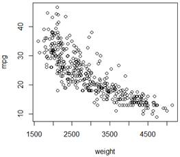
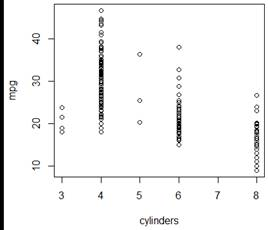
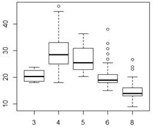
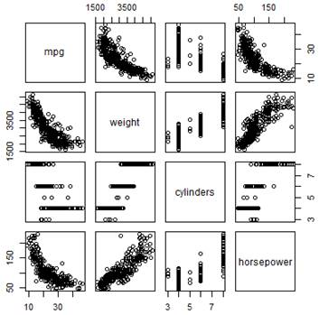

First steps in R. Variables, summary, folders, data sets
# Vectors and simple operations
> x <- c(1,3,5,6) # Create a vector (c means concatenate)
> x = c(1,3,5,6) # Another way to define a vector
> x
[1] 1 3 5 6
> x[2] # Get the 2nd element of vector x
[1] 3
> x[2:4] # Get all elements of x from the 2nd to the 4th
[1] 3 5 6
> x = rnorm(10000,2,100) # Generate a vector of 10,000 Normal random variables
# with mean 2 and st. deviation 100
# Basic statistics
> mean(x)
[1] 2.379067
> sd(x)
[1] 100.0676
# Arithmetic operations
> x = c(1,3,5,7,0,-1)
> x
[1] 1 3 5 7 0 -1
> x^2
[1] 1 9 25 49 0 1
> sin(x)
[1] 0.8414710 0.1411200 -0.9589243 0.6569866 0.0000000 -0.8414710
> log(x)
[1] 0.000000 1.098612 1.609438 1.945910 -Inf NaN
Warning message:
In log(x) : NaNs produced
# Define a matrix A based on a vector x
> A = matrix(x,2,3)
> A
[,1] [,2] [,3]
[1,] 1 5 0
[2,] 3 7 -1
# READING DATA FROM EXTERNAL FILES
# To point to the right folder, go "File" -> "Change dir..." or use the setwd command
# Which folder is R pointed to right now?> getwd()[1] "C:/Users/baron/Documents" # Let's change the folder to the one where we have data. Notice slashes.
> setwd("C:/Users/baron/630/data")
# Use read.table("file.txt") to read text files
# Rda and Rdata files should be opened with load("file.rda")
> load("Auto.rda")
# Find out what variables are in the set
> dim(Auto)
[1] 392 9
> names(Auto)
[1] "mpg" "cylinders" "displacement"
[4] "horsepower" "weight" "acceleration"
[7] "year" "origin" "name"
> summary(Auto)
mpg cylinders displacement
Min. : 9.00 Min. :3.000 Min. : 68.0
1st Qu.:17.00 1st Qu.:4.000 1st Qu.:105.0
Median :22.75 Median :4.000 Median :151.0
Mean :23.45 Mean :5.472 Mean :194.4
3rd Qu.:29.00 3rd Qu.:8.000 3rd Qu.:275.8
Max. :46.60 Max. :8.000 Max. :455.0
horsepower weight acceleration
Min. : 46.0 Min. :1613 Min. : 8.00
1st Qu.: 75.0 1st Qu.:2225 1st Qu.:13.78
Median : 93.5 Median :2804 Median :15.50
Mean :104.5 Mean :2978 Mean :15.54
3rd Qu.:126.0 3rd Qu.:3615 3rd Qu.:17.02
Max. :230.0 Max. :5140 Max. :24.80
year origin name
Min. :70.00 Min. :1.000 amc matador : 5
1st Qu.:73.00 1st Qu.:1.000 ford pinto : 5
Median :76.00 Median :1.000 toyota corolla : 5
Mean :75.98 Mean :1.577 amc gremlin : 4
3rd Qu.:79.00 3rd Qu.:2.000 amc hornet : 4
Max. :82.00 Max. :3.000 (Other) :365
# Look at the data as a spreadsheet> fix(Auto)
# Refer to the particular variable in this dataset with $ sign...
> Auto$name
[1] chevrolet chevelle malibu
[2] buick skylark 320
[3] plymouth satellite
[4] amc rebel sst
[5] ford torino
< truncated >
# or attach it the dataset that you plan to work with...
> attach(Auto)
> name
[1] chevrolet chevelle malibu
[2] buick skylark 320
[3] plymouth satellite
[4] amc rebel sst
[5] ford torino
< truncated >
# Descriptive statistics: mean and the 5-number summary
> mean(mpg)
[1] 23.44592
> summary(mpg)
Min. 1st Qu. Median Mean 3rd Qu. Max.
9.00 17.00 22.75 23.45 29.00 46.60
# PLOTS.
# Before you do anything with the data, look at them.
> plot(weight,mpg)
> plot(cylinders,mpg)


# Perhaps, we should treat “cylinders” is a categorical variable?
> cyl = as.factor(cylinders)
> plot(cyl,mpg) # When one variable is categorical, we get boxplots of the other variable

# Axis labels, graph title, color
> plot(weight, mpg, xlab="Weight", ylab="MPG", main="Plot of Miles per Gallon", col="blue")
# SCATTERPLOT MATRIX ## Use it to plot more than 2 variables. # First, partition the graphing window into a matrix > par(mfrow=c(4,4)) # Then fill each non-diagonal space with the corresponding scatterplot > pairs(~mpg+weight+horsepower+year)

# Saving a graph in a file
> pdf("filename.pdf")
> plot(weight, mpg, xlab="Weight", ylab="MPG", col="blue")
> dev.off()
windows
2
# Finish and quit R
> q()